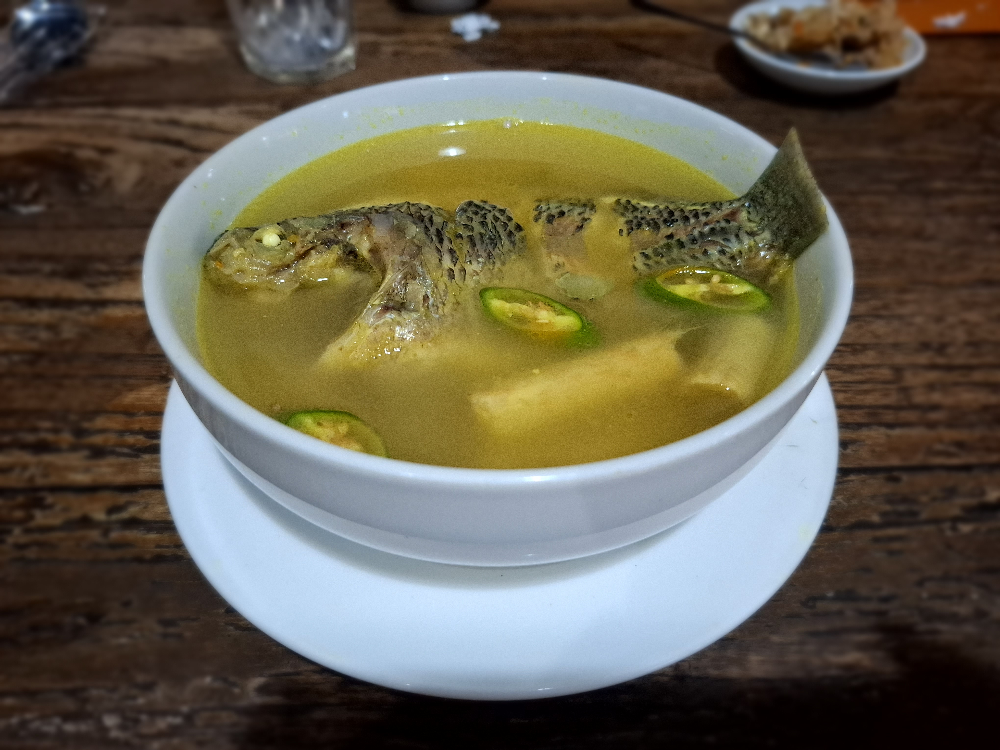
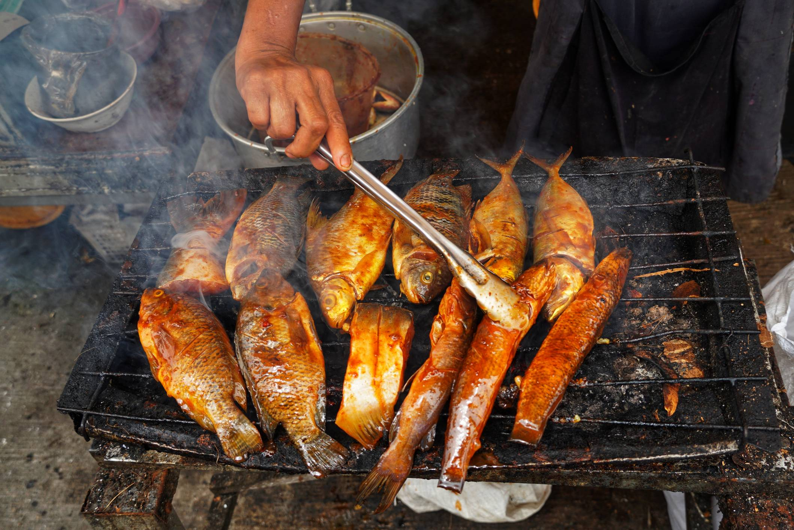
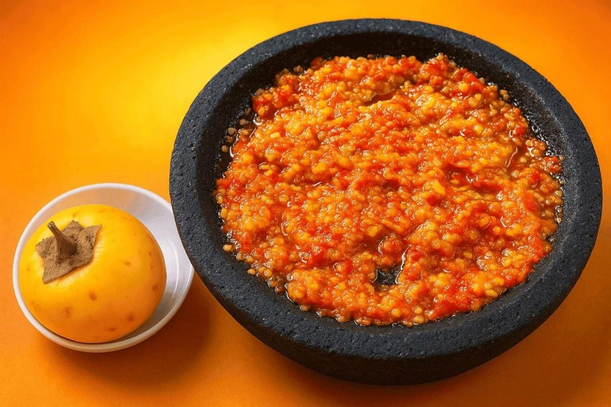
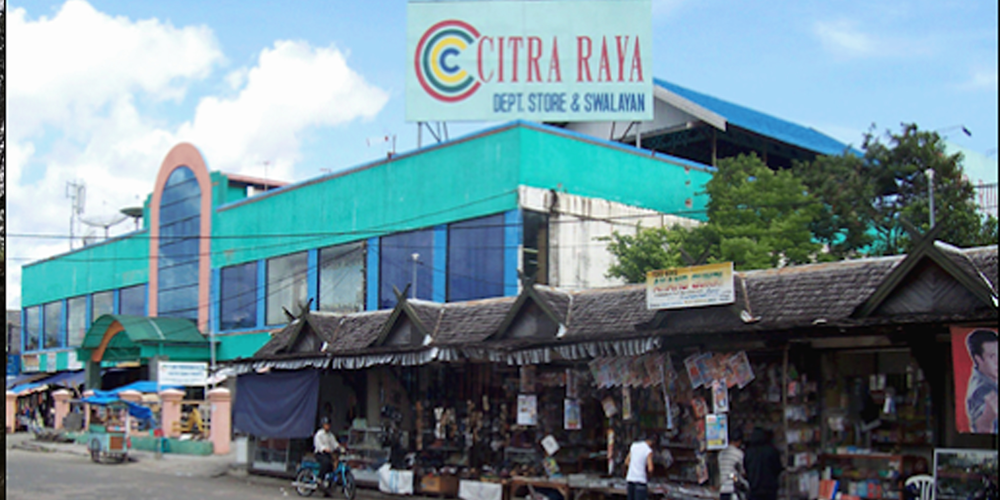
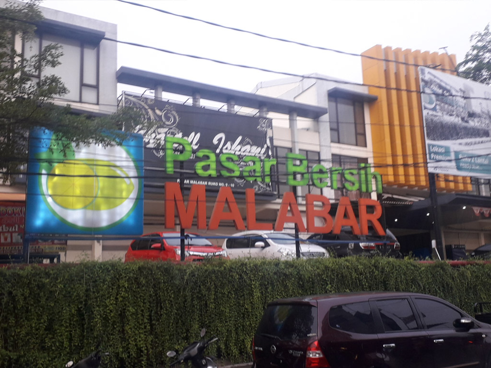

Jelajahi cita rasa khas daerah melalui makanan tradisional dan pengalaman kuliner autentik.

Masakan khas Dayak berbahan rotan muda dengan rasa unik dan khas.

Ikan segar dari sungai Kalimantan yang dibakar dengan bumbu tradisional.

Sambal khas berbahan buah hutan dengan rasa pahit gurih.

Tempat terbaik untuk menemukan bahan makanan segar dan jajanan lokal.

Pasar tradisional dengan suasana khas dan beragam kuliner autentik.